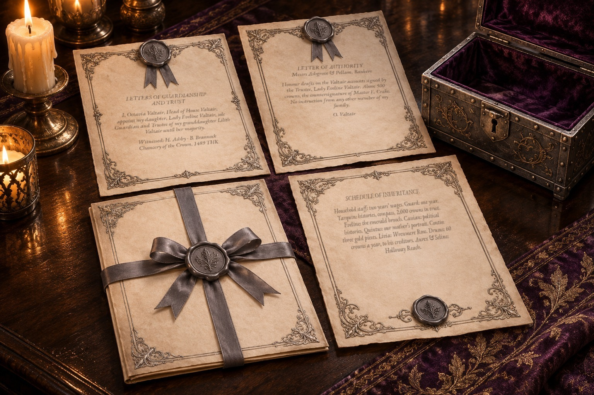

Inside the box, under the will: four documents, each heavily sealed. The deed is still tied in grey ribbon.
Know all persons by these presents that I, Octavia Valtair, Head of House Valtair, appoint my daughter, Lady Eveline Valtair, sole Guardian of the person and estate of my granddaughter Lilith Valtair, and sole Trustee of every holding devised to her, until the said Lilith attains her majority. No other person, by right of marriage, blood or seniority, shall exercise any authority over the said estate. Signed, sealed and delivered in the presence of the witnesses below. Witnessed: H. Ashby, Steward. B. Brannock, Sergeant of the Household Guard. Registered: Chancery of the Crown, Theria, 1489 THK.
You are instructed, upon my death, to honour drafts drawn upon the Valtair accounts in the name of Lilith Valtair when signed by her Trustee, Lady Eveline Valtair. No single draft above five hundred gold crowns shall be honoured without the countersignature of Master Ellery Crake, Solicitor. You shall render a full account each quarter to the Trustee and the said Solicitor. You shall honour no instruction from any other member of my family. O. Valtair.
Household staff, both estates: two years’ wages, and continued employment. Household guard: one year’s wages. Tarquin Valtair: the illustrated histories, the silver travelling compass, and two thousand crowns in trust for his education. Lady Eveline Valtair: the emerald brooch; letters and journals. Lord Cassian Valtair: the political histories of the late Lord Severin. Lord Decimus Valtair: the portrait of our mother, which he has always admired. Contio Valtair: three gold pieces. Lady Livia Corvane: the townhouse in Wrenmere Row. Drusus Valtair: an allowance of sixty crowns a year, paid to his creditors. Aurex and Seline Valtair: the farms at Holloway Reach, jointly.
I convey to Lilith Valtair the principal Valtair Estate in the capital, the Valtair country estate near Aldmere, and all deeds, rents, investments, hereditary privileges and rights of the Head of House Valtair. The signet of the House shall be delivered into the hands of my heir as I have already arranged. O. Valtair.